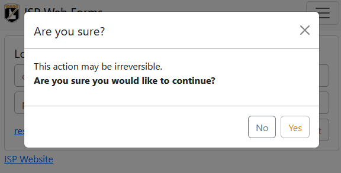

Use this JavaScrpt to add a confirmation dialog quickly to a button, anchor, or form element. It is used to display a bootstrap modal presenting an affirmative (by default Yes) and negative (by default No) response.
When the target is clicked or submitted, the event is caught and stopped. Then a Bootstrap modal is added to the DOM and shown with the configured settings. If you click the affirmative response, either the configured callback will be executed or the event that was interrupted will be fired again. This time the confirmation dialog will be skipped to allow the event to propagate to completion. If you click the negative response and you have a callback configured, the callback will be executed. Otherwise the modal is hidden and nothing else happens.

Start by adding the initialization JavaScript to your page.
Toggle a working confirmation demo by clicking the submit button below. You can click 'Yes' if you want.
You can target the form instead if you want.
You can also put the submit button outside the form if needed. It will work just as you would expect.
Using the name and value attributes to submit values is supported.
You can customize the text in the title and body of the modal.
You can also customize the button text.
You can add a confirmation to a link as well to confirm that the user wants to navigate away from this page.
Sometimes you may want to add custom JavaScript functionality to the possitive or negative response of the confirmation. You can do this by adding a callback in the options.
It is possible to add an event listener after the confirmation, effectively making it a confirmation for that event listener. To do this, you have to initialize the confirmation first, then add your event listener.
This works because events are executed in the order they are added to an element and the confirmation JavaScript attempts to continue the normal operations of a click (or submit) on a positive response from the user.
| Name | Type | Default | Description |
|---|---|---|---|
title |
string | 'Are you sure?' |
The title of the confirmation modal. |
body |
string | 'This action may be irreversible.<br><br><b>Are you sure you would like to continue?</b>' |
The body of the confirmation modal. |
yesLabel |
string | 'Yes' |
The label on the positive response button. |
yesClass |
string | 'btn-primary' |
The CSS class of the positive response button. |
noLabel |
string | 'No' |
The label on the negative response button. |
noClass |
string | 'btn-secondary' |
The CSS class of the negative response button. |
hideX |
boolean | false |
Hides the 'x' in the upper right side of the modal. Use with static true to force users to pick 'Yes' or 'No'. |
static |
boolean | false |
Has Bootstrap create a static backdrop.
Use with hideX true to force users to pick 'Yes' or 'No'.
|
yesCallback |
(target: HTMLElement, modal: Modal) => void | undefined |
Override a positive response click with a custom callback. The first parameter of the function is the HTML element that was targeted by the confirmation. The second parameter is an instance of Bootstrap's Modal object that represents the confirmation dialog (so you can hide it when your ready). |
noCallback |
(target: HTMLElement, modal: Modal) => void | undefined |
Override a negate response click with a custom callback. The first parameter of the function is the HTML element that was targeted by the confirmation. The second parameter is an instance of Bootstrap's Modal object that represents the confirmation dialog (so you can hide it when your ready). |
| Method | Description |
|---|---|
destroy |
Removes all elements and event listeners created during initialization from the DOM. |
| Event | Description |
|---|---|
isp.confirmation:show |
This event fires immediately when the confirmation has been triggered to show. |
isp.confirmation:shown |
This event is fired when the confirmation has been made visible to the user (will wait for CSS transitions to complete). |
isp.confirmation:hide |
This event is fired immediately when the confirmation has been triggered to hide. |
isp.confirmation:hidden |
This event is fired when the confirmation has finished being hidden from the user (will wait for CSS transitions to complete). |
isp.confirmation:hidePrevented |
This event is fired when the confirmation is shown, its backdrop is static and a click outside of the confirmation is performed. |